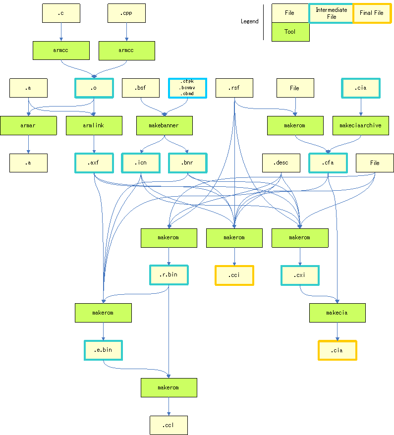
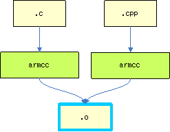
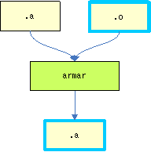
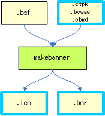
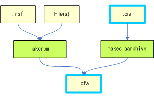
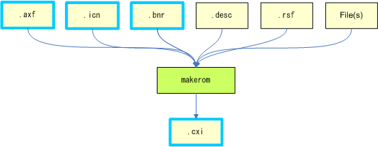
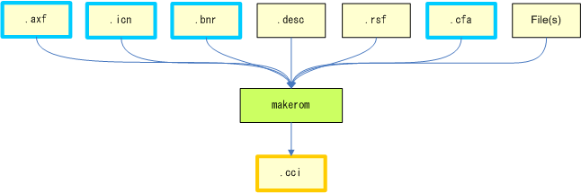
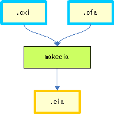
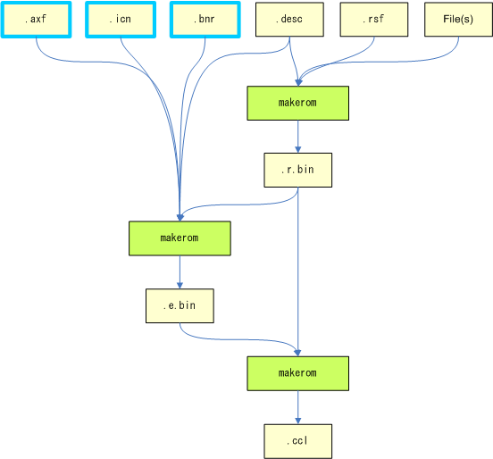

This document is for those who want to develop their own build systems, rather than use the one in the SDK. It provides information necessary for building CTR applications.
For information about the structure and usage of the build system provided by the SDK, see Build System.
This document assumes basic knowledge of CTR-SDK terminology. For a glossary of basic CTR-SDK terms, see CTR-SDK Terminology.
Content in shaded boxes, as shown below, indicate a sequence to be entered on the command line.
command option1 option2
Do not enter text enclosed in angle brackets ("<" and ">") verbatim as part of the command syntax. Instead, substitute an appropriate entry for the placeholder description. For example, the string <CTRSDK_ROOT> indicates that you must enter the CTR-SDK installation path.
Text in square brackets ("[" and "]") is optional.
makecia -i <CXI_FILE> -o <OUTPUT_FILE> [-man <E_MANUAL_CFA_FILE>]
Elements preceding ellipses (...) can be repeated any number of times.
armar --create <OUTPUT_FILE> <INPUT_FILE>...
In this document, the names of Windows tools contained in the tools/CommandLineTools directory are abbreviated by omitting the leading ctr_ and the ending file extension. For example, the abbreviation for ctr_makerom32.exe is makerom.
The following figure illustrates the overall build sequence, from the source files and other resources up to the creation of a ROM image (CCI and CIA files). 
Use armcc to compile C/C++ source files. armcc converts source files into object files.

armcc, see the RVCT and RMCC documentation. For restrictions on armcc options used with CTR-SDK, see Restrictions on Compiler and Linker Options . For the macro definitions that the SDK requires, see Macros Required by SDK. For more information about the options that are required to use the SDK libraries, see Libraries Provided by SDK.
This section describes the basic use of armcc with the CTR-SDK. (Although the following command is separated into multiple lines for readability, an actual command cannot contain newline characters.)
armcc
-c
--apcs=/interwork
--cpu=MPCore
--fpmode=fast
--signed_chars
--cpp
--force_new_nothrow
--no_exceptions
--no_rtti
-DNN_COMPILER_OPTION_ARM
-DNN_COMPILER_RVCT
-DNN_COMPILER_RVCT_VERSION_MAJOR=4
-DNN_DEBUGGER_KMC_PARTNER
-DNN_EFFORT_FAST
-DNN_HARDWARE_CTR
-DNN_HARDWARE_CTR_TS
-DNN_PLATFORM_CTR
-DNN_PROCESSOR_ARM
-DNN_PROCESSOR_ARM11MPCORE
-DNN_PROCESSOR_ARM_V6
-DNN_PROCESSOR_ARM_VFP_V2
-DNN_SWITCH_DISABLE_ASSERT_WARNING=1
-DNN_SWITCH_DISABLE_ASSERT_WARNING_FOR_SDK=1
-DNN_SWITCH_DISABLE_DEBUG_PRINT=1
-DNN_SWITCH_DISABLE_DEBUG_PRINT_FOR_SDK=1
-DNN_SYSTEM_PROCESS
-I<CTRSDK_ROOT>/include
-o <OUTPUT_FILE>
<SOURCE_FILE>
The command compiles SOURCE_FILE and outputs the results to OUTPUT_FILE.
You can combine multiple object files and static libraries into a single static library. Use armar to create a static library.

armar as follows:
armar --create <OUTPUT_FILE> <INPUT_FILE>...
The command combines the files specified by INPUT_FILE and creates OUTPUT_FILE.
Each application must have a banner and icon that are used on the HOME Menu. Use makebanner to create the banner and icon.

makebannermakebanner <BSF_FILE> <BANNER_FILE> <ICON_FILE>
The command takes the information stored in each file and creates BANNER_FILE and ICON_FILE based on the instructions in BSF_FILE.
The SDK includes a default banner and icon that you can use during development. The default banner and icon are as follows.
<CTRSDK_ROOT>/resources/banner/Default.bnr <CTRSDK_ROOT>/resources/banner/Default.icn
armlink combines the object files generated by the compiler and the static libraries that combine them into an AXF file.
For instructions on using armlink, see the RVCT and RMCC documentation. For information about the restrictions on armlink options with CTR-SDK, see Restrictions on Compiler and Linker Options. For more information about the options that are required to use the SDK libraries, see Libraries Provided by SDK.
This section describes the basic use of armlink with CTR-SDK. (Although the following command is separated into multiple lines for readability, an actual command cannot contain newline characters.)
armlink
--datacompressor off
--keep=nnMain
--scatter=<CTRSDK_ROOT>/resources/specfiles/linker/CTR.Process.MPCore.ldscript
-o <OUTPUT_FILE>
<INPUT_FILE> ...
The command combines files specified by INPUT_FILE and outputs the results to OUTPUT_FILE.
A CFA file is an archive that converts a directory structure containing multiple files into a single file. These files are used to store download-play programs, e-manuals, and add-on content.

There are two ways to create CFA files You can use makeciaarchive to store download-play programs, or use makerom to store e-manuals and add-on content.
makeciaarchive is a tool for creating a CFA file from multiple CIA files. It is used to create CFA files storing download-play programs.
Use makeciaarchive as follows:
makeciaarchive -cia <INPUT_FILE>... -o <OUTPUT_FILE>
Specify the CIA files with INPUT_FILE. The tool combines the CIA files and outputs them to OUTPUT_FILE in CFA format.
You can use the -cia option multiple times. You can create a CFA file storing multiple CIA files by specifying INPUT_FILE multiple times.
Create a CFA file using makerom by specifying the -data option.
Create a CFA file using makerom as follows. (Although the following command is separated into multiple lines for readability, an actual command cannot contain newline characters.)
makerom -f data
-rsf <RSF_FILE>
-o <OUTPUT_FILE>
The tool creates OUTPUT_FILE as a CFA file that contains the content specified by RSF_FILE.
You must create a CXI file as part of the process of creating an import application. Use makerom to create a CXI file.

makerom as follows. (Although the following command is separated into multiple lines for readability, an actual command cannot contain newline characters.)
makerom -f exec
<AXF_FILE>
-rsf <RSF_FILE>
-desc <CTRSDK_ROOT>/resources/specfiles/Application.desc
-banner <BANNER_FILE>
-icon <ICON_FILE>
-o <OUTPUT_FILE>
The tool creates OUTPUT_FILE as a CXI file, storing the content in AXF_FILE, BANNER_FILE, and ICON_FILE in accordance with the settings in RSF_FILE. If HostRoot is specified in RSF_FILE, the files below the directory specified as ROM-FS are stored in OUTPUT_FILE.
When you create a Card application, the final step is creating a CCI file. Use makerom to create a CCI file.

makerom as follows. (Although the following command is separated into multiple lines for readability, an actual command cannot contain newline characters.)
makerom -f card
<AXF_FILE>
-rsf <RSF_FILE>
-desc <CTRSDK_ROOT>/resources/specfiles/Application.desc
-banner <BANNER_FILE>
-icon <ICON_FILE>
[-content <E_MANUAL_CFA_FILE>:1]
[-content <DOWNLOAD_PLAY_CFA_FILE>:2]
-o <OUTPUT_FILE>
This command creates OUTPUT_FILE as a CCI file, storing AXF_FILE, BANNER_FILE, ICON_FILE, E_MANUAL_CFA_FILE (the CFA file storing the e-manual), and DOWNLOAD_PLAY_CFA_FILE (the CFA file storing the download play child program) in accordance with the settings in RSF_FILE. If HostRoot is specified in RSF_FILE, the files below the directory specified as ROM-FS are stored in OUTPUT_FILE. E_MANUAL_CFA_FILE and DOWNLOAD_PLAY_CFA_FILE are optional; only specify them when needed. Specify 1 for the content index of a CFA file storing an e-manual. Specify 2 for the content index of a CFA file storing a download-play child program. You must not specify any other indexes.
When you create an import application, the final step is creating a CIA file. Use makecia to create a CIA file.

makecia as follows: (Although the following command is separated into multiple lines for readability, an actual command cannot contain newline characters.)
makecia -i <cxi file>
-o <OUTPUT_FILE>
[-man <E_MANUAL_CFA_FILE>]
[-i <DOWNLOAD_PLAY_CHILD_CFA_FILE>:2]
This command creates OUTPUT_FILE as a CIA file storing CXI_FILE, E_MANUAL_CFA_FILE, and DOWNLOAD_PLAY_CHILD_CFA_FILE. Only use options to specify an E_MANUAL_CFA_FILE and DOWNLOAD_PLAY_CHILD_CFA_FILE as necessary.
A CCL file is a modified version of the CCI format. It requires three files: the CCL file itself, and the LR file (.r.bin) and LE file (.e.bin) that it references. Create these three files using makerom.

makerom as follows.
makerom -f lr -rsf <RSF_FILE> -o <OUTPUT_FILE>
This command creates OUTPUT_FILE as an LR file in accordance with the settings in RSF_FILE. If HostRoot is specified in RSF_FILE, the files below the directory specified as ROM-FS are stored in OUTPUT_FILE.
Create the LE file using makerom as follows. (Although the following command is separated into multiple lines for readability, an actual command cannot contain newline characters.)
makerom -f le
<AXF_FILE>
-rsf <RSF_FILE>
-desc <CTRSDK_ROOT>/resources/specfiles/Application.desc
-banner <BANNER_FILE>
-icon <ICON_FILE>
-lr <LR_FILE>
-m 0x02000000
-o <OUTPUT_FILE>
The tool creates OUTPUT_FILE as an LE file storing the content in AXF_FILE, BANNER_FILE, and ICON_FILE in accordance with the settings in RSF_FILE and LR_FILE.
Create the CCL file using makerom as follows.
makerom -f list -le <LE_FILE> -lr <LR_FILE> -o <OUTPUT_FILE>
This command creates OUTPUT_FILE as a CCL file, corresponding to LE_FILE and LR_FILE.
A Download Play child program is a type of imported application. For this reason, when you create a Download Play child program you create a CIA file. When creating Download Play child programs, refer to Creating a CIA File and Programming Manual: Application Creation Procedures.
When building, take care with unique IDs and client indexes.
All stored download play child programs must have the same unique ID as the download play parent program.
If you want to store more than one download play child program in the CIA file, you must specify them so that no child indexes overlap.
Specify the unique ID using the UniqueId parameter in the RSF file. Specify the child-program index using the ChildIndex parameter in the RSF file. For more information about RSF files, see makerom.
Use the described RSF file configurations to create a CXI file for a download play child program.
To create an application that supports download play, you must include a CFA file containing a download play child program in your CCI file.
For instructions on creating a CCI file with a CFA file that contains a download play child program, see Creating CCI Files.
Use makeciaarchive to create a CFA file that contains a download play child program. For instructions on creating a CFA file that contains a download play child program, see Creating CFA Files Using makeciaarchive.
You can specify an RSF file to makeciaarchive using the -rsf option. If you want to create a CFA file that contains a download play child program, only specify <CTRSDK_ROOT>/resources/specfiles/Child.rsf as your RSF file. You must not use any other RSF file. In addition, do not edit the file in any way.
A CFA file that contains an e-manual is an archive with a BCMA file created using CTR ManualTools. For information about BCMA files and how to create them, see the CTR ManualTools documentation.
Use makerom to create a CFA file that contains an e-manual. Create a CFA file that contains an e-manual using makerom as follows. (Although the following command is separated into multiple lines for readability, an actual command cannot contain newline characters.)
makerom -f data
-rsf <CTRSDK_ROOT>/resources/specfiles/Manual.rsf
-DROMFS_ROOT=<MANUAL_DIRECTORY>
-DMANUAL_DISCLOSURE=<true if showing the e-manual with advance downloading, false when not showing>
-o <OUTPUT_FILE>
This command creates OUTPUT_FILE as a CFA file storing the e-manual in MANUAL_DIRECTORY.
Put the BCMA file Manual.bcma in MANUAL_DIRECTORY. You must not place any other files in this directory. You also must not use a BCMA file with a different name.
Specify only the RSF file in <CTRSDK_ROOT>/resources/specfiles/Manual.rsf using the -rsf option. You must not use any other RSF file. In addition, do not edit the file in any way.
For more information, see How to Create Data Titles in ECommerceDevelopmentKit.
For more information, see How to Create Data Titles in ECommerceDevelopmentKit.
CTR-SDK uses RVCT and ARMCC as its compiler and linker. The only difference between RVCT and ARMCC is their versions; they are from the same series of compilers and linkers. This documentation makes no distinction between RVCT and ARMCC and simply calls them compiler and linker.
The compiler and linker have large numbers of command-line options, and the generated code depends on the options that are specified.
CTR-SDK assumes that some options are used and other options are not used, and the created program may fail to function correctly if these assumptions are not met. The compiler or linker may report an error if certain options are specified and prevent the program from being created. Even if the tools succeed in creating an AXF file, the SDK tools may subsequently report an error.
Make sure to follow the option availability below when using the compiler and linker.
The following sections list the allowed and prohibited compiler options.
The following options are required. These options must be specified every time you use this tool.
--apcs=/interwork --c99 (when compiling C source) --cpu=MPCore --fpmode=fast --signed_chars
You must use the defaults for the following options. Specify these options by using the default values. Do not specify any other values.
--library_interface=rvct --library_type=standardlib --littleend --wchar16 --wchar
Although these options are not mandatory, we recommend their use.
--debug --debug_info=line_inlining_extensions --no_debug_macros --remove_unneeded_entities --split_sections
The following options are optional.
--allow_null_this --arm --asm --asm_dir --autoinline --brief_diagnostics --bss_threshold --code_gen --compile_all_input --cpp --create_pch --data_reorder --debug_info --debug_macros --default_extension --depend --depend_dir --depend_format --depend_system_headers --depend_target --diag_error --diag_remark --diag_style --diag_suppress --diag_warning --dollar --dwarf2 --dwarf3 --emit_frame_directives --errors --exceptions --exceptions_unwind --feedback --force_new_nothrow --gnu --help --ignore_missing_headers --implicit_include --info=totals --inline --instrument_inline --interleave --intermediate_object_files --link_all_input --list --list_dir --list_macros --locale --long_long --loose_implicit_cast --md --message_locale --mm --multibyte_chars --multifile --output_dir --pch --pch_dir --pch_messages --pch_verbose --phony_targets --preinclude --preprocessed --reassociate_saturation --reduce_paths --restrict --retain --rtti --rtti_data --show_cmdline --sys_include --thumb --use_pch --version_number --vfe --via --vla --vsn --whole_program --wrap_diagonostics -A -C -E -I -L -M -O -Ospace -Otime -P -S -U -W -c -g -o
The following options are prohibited. You must not use them.
--alternative_tokens --anachronisms --arm_linux --arm_linux_config_file --arm_linux_configure --arm_linux_paths --arm_only --bigend --bitband --c90 --compatible --configure_cpp_headers --configure_extra_includes --configure_extra_libraries --configure_gas --configure_gcc --configure_gcc_version --configure_gld --configure_sysroot --default_definition_visibility --dep_name --device --dllexport_all --dllimport_runtime --enum_is_int --execstack --export_all_vtbl --export_defs_implicity --extended_initializers --forceinline --fp16_format --fpu --friend_injection --global_reg --gnu_defaults --gnu_version --guiding_decls --hide_all --implicit_include_searches --implicit_key_function --implicit_typename --import_all_vtbl --interface_enums_are_32_bit --kandr_include --licretry --lower_ropi --lower_rwpi --ltcg --min_array_alignment --multiply_latency --nonstd_qualifier_deduction --nonstd_qualifier_deduction --old_specializations --old_style_preprocessing --parse_templates --pending_instanciations --pointer_alignment --profile --project --reinitialize_workdir --relaxed_ref_def --shared --signed_bitfields --split_ldm --strict --strict_warnings --translate_g++ --translate_gcc --translate_gld --trigraphs --type_traits_helpers --use_gas --using_std --vectorize --visibility_inlines_hidden --wchar32 --workdir -J -Warmcc,[option]
The following sections list the allowed and prohibited linker options.
The following options are required. These options must be specified every time you use this tool.
--datacompressor=off --keep=nnMain --scatter=<CTRSDK_ROOT>/resources/specfiles/linker/CTR.Process.MPCore.ldscript
You must use the defaults for the following options. Specify these options by using the default values. Do not specify any other values.
--be8 --cpu=MPCore --entry=__ctr_start --legacyalign --library_type=standardlib --ref_cpp_init --scanlib --startup=__ctr_start
Although these options are not mandatory, we recommend their use.
--largeregions --no_eager_load_debug --strict
The following options are optional.
--bestdebug
--branchnop
--callgraph
--callgraph_file
--callgraph_output
--cgfile
--cgsymbol
--cgundefined
--comment_section
--compress_debug
--crosser_veneershare
--diag_error
--diag_remark
--diag_style
--diag_suppress
--diag_warning
--eager_load_debug
--errors
--exceptions
--exceptions_table
--feedback
--feedback_image
--feedback_type
--filtercomment
--help
--info
--info_lib_prefix
--inline
--inlineveneer
--libpath
--list
--list_mapping_symbols
--mangled
--map
--max_veneer_passes
--merge
--merge_partial_comdat
--output
--pad
--partial
--privacy
--reduce_paths
--remarks
--remove
--section_index_display
--show_cmdline
--show_full_path
--show_parent_lib
--show_sec_index
--sort
--strict
--strict_enum_size
--strict_wchar_sizse
--symbols
--symdefs
--tailreorder
--tiebreaker
--userlibpath
--veneer_inject_type
--veneershare
--verbose
--version_number
--vfemode
--via
--vsn
--xref
--xrefdbg
--xref{from|to}
The following options are prohibited. You must not use them.
--add_needed --add_shared_references --any_placement --any_sort_order --arm_linux --arm_only --as_needed --autoat --base_platform --be32 --bpabi --combreloc --cppinit --device --dll --dynamic_debug --dynamiclinker --edit --emit_debug_overlay_relocs --emit_debug_overlay_section --emit_non_debug_relocs --emit_relocs --execstack --export_all --export_dynamic --fini --first --force_explicit_attr --force_so_throw --fpic --fpu --gnu_linker_defined_syms --implicit_branchpatch --import_unresolved --init --keep_protected_symbols --last --ldpartial --library --licretry --linker_script --linux_abitag --locals --ltcg --match --max_visibility --muldefweak --override_visibility --paged --pagesize --pivenner --pltgot --pltgot_opts --predefine --prelink_support --profile --project --reinitialize_workdir --reloc --ro_base --ropi --rosplit --runpath --rw_base --rwpi --search_dynamic_libraries --shared --soname --split --strict_ph --strict_relocations --symbolic --symver_script --symver_soname --sysv --undefined --undefined_and_export --unresolved --use_definition_visibility --use_sysv_default_script --workdir --zi_base
CTR-SDK uses C/C++ macros to enable or disable a number of features. Accordingly, you must provide the appropriate macro definitions as compiler options.
The following macros must always be set for CTR. You must define them for all CTR projects.
NN_COMPILER_OPTION_ARM NN_COMPILER_RVCT NN_DEBUGGER_KMC_PARTNER NN_HARDWARE_CTR NN_HARDWARE_CTR_TS NN_PLATFORM_CTR NN_PROCESSOR_ARM NN_PROCESSOR_ARM11MPCORE NN_PROCESSOR_ARM_V6 NN_PROCESSOR_ARM_VFP_V2 NN_SYSTEM_PROCESS
You must change your macro specifications based on the following selections.
NN_COMPILER_RVCT_VERSION_MAJOR=4
You must specify an appropriate value in accordance with your RVCT/ARMCC version. If you are using RVCT version 4.0, set NN_COMPILER_RVCT_VERSION_MAJOR to 4, as shown. Even if you are using ARMCC, the name of the macro does not change.
NN_EFFORT_FAST NN_EFFORT_SMALL
Specify whether to favor speed or size when optimizing. Define NN_EFFORT_FAST for -Otime and NN_EFFORT_SMALL for -Ospace. You must define one of these options.
NN_BUILD_VERBOSE NN_SWITCH_DISABLE_DEBUG_PRINT_FOR_SDK NN_SWITCH_DISABLE_ASSERT_WARNING_FOR_SDK
The SDK provides a verbose and release version of the static libraries. You must change your macro definitions based on which version you use.
To use the verbose version, you must define NN_BUILD_VERBOSE. To use the release version, you must define NN_SWITCH_DISABLE_DEBUG_PRINT_FOR_SDK and NN_SWITCH_DISABLE_ASSERT_WARNING_FOR_SDK.
Your application may fail to link or run properly if there are inconsistencies between the macro definitions that you specify with compiler options and the static libraries you link to.
The following macros are not required to use the SDK. You can use them as needed for application development.
NN_SWITCH_DISABLE_ASSERT_WARNING
Defining NN_SWITCH_DISABLE_ASSERT_WARNING replaces ASSERT and WARNING functions with no-ops. This lets you disable ASSERT and WARNING statements without changing the source code.
NN_SWITCH_DISABLE_DEBUG_PRINT
Defining NN_SWITCH_DISABLE_DEBUG_PRINT replaces NN_LOG, NN_LOGV, and NN_PUT with no-ops. This lets you disable debug output without changing the source code.
All debug output must be disabled in the final ROM image.
The libraries provided by the SDK consist of C/C++ header files and static library files.
The C/C++ header files are located in CTR_SDK/include. You must specify CTR_SDK/include as an include to your compiler so that you can include these header files from your application's source files.
armcc -I<CTRSDK_ROOT>/include ... (omitted) ...
The static libraries are in the CTR_SDK/libraries/CTR-TS.Process.MPCore directory. There are a total of four library types, formed by combination of two binary choices (development or release, and optimization for speed or size; 2 × 2 = 4).
The development libraries are in the verbose directory and the release libraries are in the release directory. Each of those directories contains a library optimized for speed (*.fast.* files) and a library optimized for size (*.small.* files).
verbose/*.fast.a For development, optimized for speed. verbose/*.small.a For development, optimized for size. release/*.fast.a For release, optimized for speed. release/*.small.a For release, optimized for size.
When you use a library, you must choose which of the four library types to use. Although you can mix the speed and size-optimized types in a single program, you cannot mix development and release libraries in this way.
The development libraries differ from the release libraries in the following ways to facilitate development and debugging.
Ordinarily, use the development libraries while you are developing your application. Your final ROM image must link to the release libraries.
To make an SDK library available to your application, you must specify the appropriate static library as one of the input files of the linker.
armlink <CTRSDK_ROOT>\libraries\CTR-TS.Process.MPCore\release\libnn_os.fast.a ... (omitted) ...
The libraries have interdependencies. Providing only a portion of the static libraries as input to the linker may cause an error. Even if linking is successful, the program may fail to run correctly. You must specify all libraries to the linker, with the exception of the development-only libraries and optional libraries described in the following sections.
Some of the libraries provided by the SDK are specialized for development. Specifically, the functions in the nn::hio, nn::midi, and nn::fs::hio namespaces are for development only. You must ensure that you do not use these functions in your final ROM image. The following four static libraries support these functions: libnn_hio.*.a, libnn_midi.*.a, libnn_fshio.*.a, and libnn_dev.*.a. When you create your final ROM image, you can detect the use of development-only functions as linker errors by ensuring that these static libraries are not specified as input files for the linker.
Some of the libraries provided by the SDK are not essential libraries. Most of these libraries are open source, and you do not need to take steps to avoid symbol conflicts. Currently, the only static library that is optional is libzlib.*.a.
The directory containing the static libraries also contains the object files crt0.*.o. As with other static libraries, you must specify this file as one of the linker's input files.
RSF and DESC files are necessary for creating an application.
You must create a separate RSF file for each application. However, if you create a CFA file that contains an e-manual or a download play child program, you must use the appropriate RSF file included in the SDK. For more information about writing RSF files, see makerom. The following RSF files are in CTR_SDK/resources/specfiles:
Application.rsf
Child.rsf
Manual.rsf
AddOnContent.rsf
The DESC files are the same for all applications. You must use one of the files included in the SDK without modifications of any kind.
The DESC files are located in the CTR_SDK/resources/specfiles directory. Use the appropriate file for your application.
Application.desc
DlpChild.desc
NN_COMPILER_RVCT_VERSION_MINOR.makerom content index. --scatter linker option, which was missing its argument.
CTR-06-0200-011-D
CONFIDENTIAL
{kind=link}